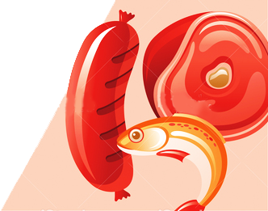
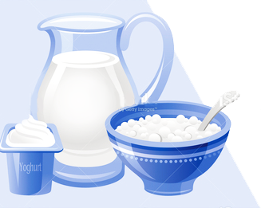
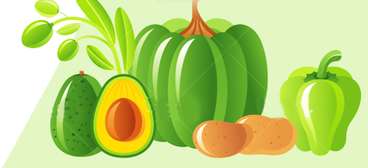
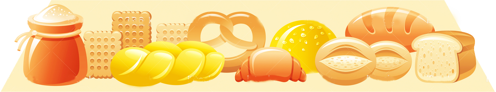
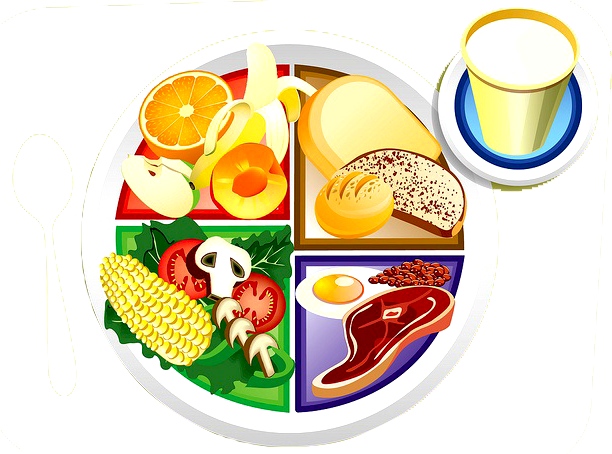
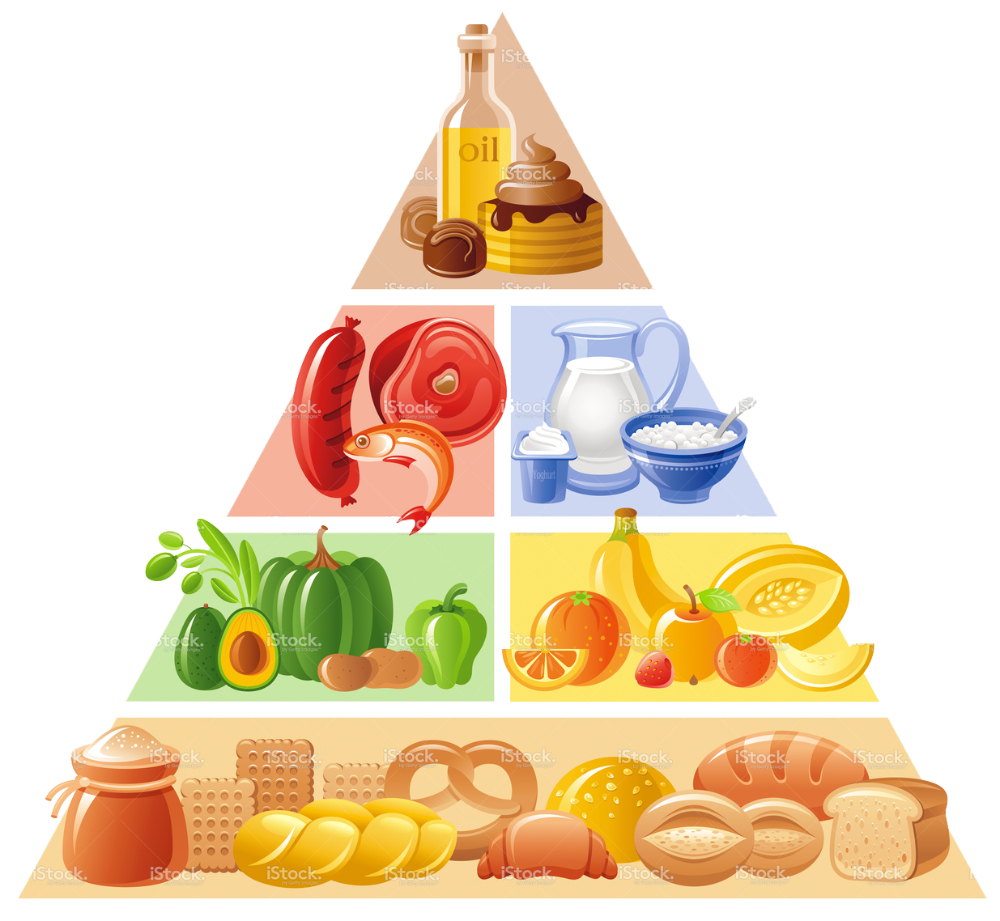

Understanding the Food Pyramid
Healthy eating is about getting the correct amount of nutrients – protein, fat,
carbohydrates, vitamins and minerals you need to maintain good health.
Foods that contain the same type of nutrients are grouped together on each of the shelves
of the Food Pyramid. This gives you a choice of different foods from which to choose a
healthy diet. Following the Food Pyramid as a guide will help you get the right balance of
nutritious foods within your calorie range. Studies show that we take in too many calories
from foods and drinks high in fat, sugar and salt, on the Top Shelf of the Food Pyramid.
They provide very little of the essential vitamins and minerals your body needs. Limiting
these is essential for healthy eating.
At different stages in your life you have different daily nutrient requirements. These
depend on your age, whether you are male or female and how active you are. While the
general number of servings for adults and children over 5 years of age is given for each
shelf of the Food Pyramid.

The Food Guide Pyramid ©
All rights reserved.
2016